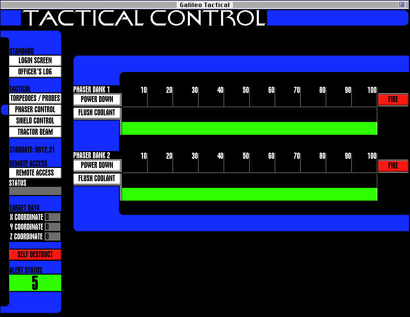

<h1>Tactical</h1>

<section id="login">
  <h2>Login</h2>
  <a href="login.png"></a>
</section>

<section id="officer-log">
  <h2>Officer Log</h2>
  <a href="officer-log.png"></a>
</section>

<section id="torpedoes-and-probes">
  <h2>Torpedoes and Probes</h2>
  <a href="torpedoes-and-probes.png"></a>
</section>

<section id="phaser-control">
  <h2>Phaser Control</h2>
  <a href="phaser-control.png"></a>
</section>

<section id="shield-control">
  <h2>Shield Control</h2>
  <a href="shield-control.png"></a>
</section>

<section id="tractor-beam">
  <h2>Tractor Beam</h2>
  <a href="tractor-beam.png"></a>
</section>

<section id="offline">
  <h2>Offline</h2>
  <a href="offline.png"></a>
</section>
